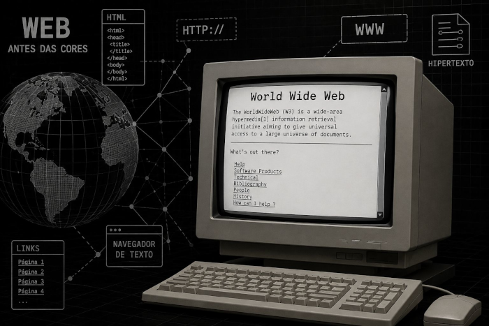

História do Estilo na Web
Provavelmente você sabe que o CSS é a linguagem usada para deixar todas as páginas da internet bonitas, coloridas e organizadas. Mas talvez você não saiba que, no início da web, as páginas eram apenas textos sem graça e que a criação dessa tecnologia envolveu uma disputa intensa? Pois acompanhe esse artigo para aprender muita coisa sobre essa evolução. TXT
A web antes das cores
A primeira tentativa de criar a web surgiu no início dos anos 90, mas não havia uma forma simples de mudar fontes ou colocar cores de fundo. Cada navegador exibia os sites do seu próprio jeito. Os desenvolvedores sofriam tentando criar layouts usando tabelas enormes e códigos confusos, o que tornava o carregamento das páginas muito lento.

Essa primeira fase da internet era funcional, mas visualmente bem sem graça.
Surge uma nova proposta
A ideia de padronizar o visual foi amadurecendo e a missão principal veio de um cientista da computação norueguês chamado Håkon Wium Lie, em 1994. Ele propóso um sistema onde os estilos pudessem se acumular em "cascata" — daí o nome Cascading Style Sheets (Folhas de Estilo em Cascata).
A ideia principal de Håkon era separar totalmente o conteúdo (que fica no HTML) do design (que fica no CSS). O código deveria ser simples, limpo e direto, permitindo que qualquer pessoa mudasse a cor de todos os títulos de um site alterando apenas uma linha de código.
A principal inspiração para o CSS funcionar em "cascata" veio da necessidade de dar poder tanto ao criador do site quanto ao usuário. Se o desenvolvedor quisesse o texto azul, mas o usuário final precisasse de uma fonte maior por acessibilidade, as regras se combinariam de forma harmoniosa, respeitando uma hierarquia.
[VIDEO]Então é isso! Espero que você tenha gostado do nosso artigo com essa curiosidade sobre a história do CSS e como ele transformou a nossa internet.